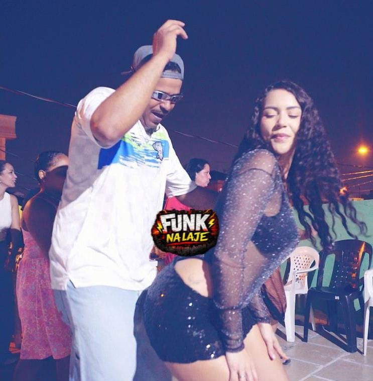

FUNK NA LAJE
Sem dublê e sem maquiagem
Sem dublê e sem maquiagem

EP #01

EP #02

EP #03

O artista MC Gugu BLD prepara o lançamento de seu novo clipe oficial, que será lançado no dia 28 nas plataformas digitais, O trabalho promete fortalecer ainda mais a cena do funk atual.
▶ Assistir clipeO Funk na Laje é uma mídia independente que valoriza a cultura do funk em todas suas vertentes, trazendo artistas para contar histórias reais e performar ao vivo.